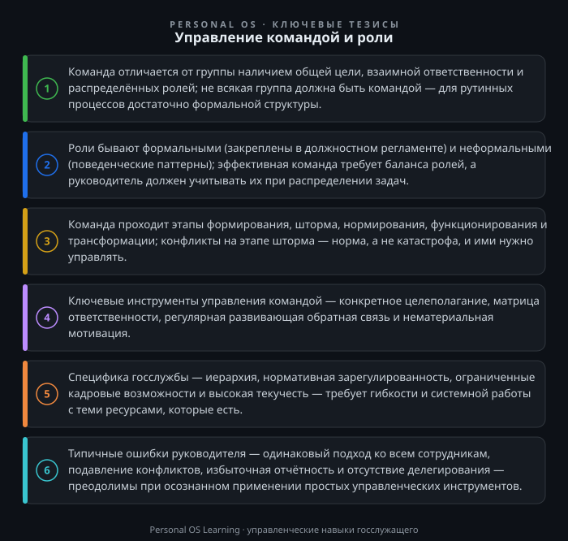

Любой руководитель в системе государственного управления рано или поздно сталкивается с парадоксом: в его подчинении есть люди, у каждого — должностные обязанности, регламенты, инструкции, но результат совместной работы не складывается. Планы срываются, совещания длятся часами, а ответственность за общий провал размывается. Причина почти всегда не в лени или некомпетентности сотрудников, а в отсутствии командной управляемости: задачи поставлены формально, роли не распределены, конфликты не урегулированы, обратная связь не работает.
Для госслужащего управление командой — это не абстрактная управленческая теория, а ежедневная практика. От того, как выстроена работа отдела, управления или департамента, зависят сроки подготовки документов, качество экспертных заключений, исполнение государственных программ и в конечном счёте — доверие граждан к власти. При этом команда в государственном секторе сильно отличается от команды в бизнесе: здесь действуют ограничения, связанные с иерархией, нормативным регулированием, кадровыми процедурами и специфической мотивацией.
В этой статье разберём, что такое команда, какие роли в ней существуют, какие этапы развития проходит коллектив и какие практические инструменты помогут вам управлять командой эффективно — в рамках законодательства и реалий госслужбы РФ.
Часто слова «группа» и «команда» используют как синонимы. Но для руководителя это принципиально разные объекты управления. Группа — это совокупность людей, объединённых формальным признаком: они работают в одном отделе, подчиняются одному начальнику, сидят в одном кабинете. Команда — это группа, у которой есть общая цель, взаимная ответственность, распределённые роли и устойчивые связи.
Приведу пример. В отделе экономического анализа работают пять экспертов. Каждый готовит свой раздел отчёта, сдаёт начальнику, тот сводит материалы. Это группа: взаимодействие минимально, ответственность за общий результат несёт только руководитель. Теперь представьте, что эти же пять человек участвуют в подготовке стратегии развития региона. Они совместно вырабатывают подход, распределяют направления, помогают друг другу, спорят о выводах и вместе отвечают за итоговый документ перед коллегией. Это команда.
Для госслужбы важно понимать: не всякая группа должна быть командой. Рутинные, жёстко регламентированные процессы (делопроизводство, учёт, контроль исполнения) эффективнее работают в режиме чёткой группы с формальными ролями. А вот проектные задачи — подготовка концепции, разработка законопроекта, проведение реформы, внедрение новой информационной системы — требуют командного режима. Задача руководителя — вовремя переключать коллектив между этими режимами и понимать, какой режим уместен в конкретной ситуации.
Управление командой невозможно без понимания ролевой структуры. Роли бывают двух типов.
Формальные роли закреплены в документах. Для госслужбы это должностные обязанности, зафиксированные в должностном регламенте Федеральный закон «О государственной гражданской службе Российской Федерации» — должностной регламент является основным документом, определяющим обязанности, права и ответственность гражданского служащего. Формальная роль отвечает на вопрос «кто за что отвечает по штатному расписанию». Она необходима, но недостаточна для командной работы: если сотрудник формально отвечает за «подготовку аналитических материалов», это не говорит о том, как он взаимодействует с коллегами при подготовке этих материалов.
Неформальные роли — это поведенческие паттерны, которые проявляются в командной работе. Наиболее известная модель описана Мередитом Белбином: роли делятся на три группы — интеллектуальные (генератор идей, аналитик, специалист), социальные (координатор, дипломат, исследователь ресурсов) и волевые (реализатор, контролёр, «доводчик»). Не буду требовать от вас запомнить все девять ролей, но важно понимать три вещи.
Первое: в эффективной команде роли дополняют друг друга. Если все сотрудники — генераторы идей, команда будет генерировать предложения, но не доводить их до конца. Если все — контролёры, работа завязнет в бесконечных проверках.
Второе: неформальная роль не всегда совпадает с должностью. Ведущий аналитик может быть генератором идей, а может быть блестящим «доводчиком», который доводит чужие наработки до совершенства. Руководитель, который видит эти роли, может точнее распределять задачи.
Третье: руководитель тоже играет роль. Частая ошибка — руководитель пытается быть одновременно и координатором, и генератором, и контролёром. Это приводит к тому, что сотрудники перестают проявлять инициативу, а руководитель выгорает.
На госслужбе ролевой подход требует осторожности. Формальная структура и субординация остаются основой. Неформальные роли не должны противоречить должностным инструкциям: если сотрудник — прирождённый «дипломат», это не значит, что он может подменять руководителя в переговорах. Но руководитель может учитывать склонности сотрудников при распределении поручений в рамках их полномочий.
Любая команда проходит несколько стадий развития. Классическая модель Брюса Такмана включает пять этапов: формирование, шторм, нормирование, функционирование и трансформация. Для госслужбы особенно важны первые три.
Формирование. Сотрудники вежливы, осторожны, ждут указаний. Руководитель должен чётко обозначить цели, правила и ожидания. На этом этапе эффективны установочные совещания, распределение задач, фиксация регламентов взаимодействия.
Шторм (конфликтный этап). Начинаются споры о методах работы, распределении ресурсов, приоритетах. В госучреждениях шторм часто проявляется не в открытых конфликтах, а в скрытом саботаже, «подковёрной» борьбе за влияние, жалобах в вышестоящие инстанции. Задача руководителя — не подавлять конфликт, а управлять им: выносить разногласия на обсуждение, устанавливать правила принятия решений, разделять «что» и «как».
Нормирование. Команда вырабатывает общие нормы и правила. Сотрудники начинают понимать, кто за что отвечает, как принимать решения, как разрешать споры. Формируется командный дух. На этом этапе важно закрепить договорённости письменно: регламенты, матрицы ответственности, протоколы совещаний.
Функционирование. Команда работает как единый механизм. Руководитель может делегировать больше полномочий, заниматься стратегическими задачами, развитием сотрудников.
Трансформация. Команда завершает проект или сталкивается с изменениями (кадровые перестановки, новые задачи). Здесь важно провести «разбор полётов», зафиксировать уроки и подготовить команду к новому циклу.
Для руководителя в органах власти практический вывод: не паникуйте, если после назначения на новую должность или после крупных кадровых изменений в коллективе начинаются конфликты. Это нормальный этап шторма. Ваша задача — не игнорировать его и не ждать, что «само рассосётся», а управлять переходом к нормированию: проводить регулярные совещания, фиксировать договорённости, демонстрировать единые стандарты требований.
Перейдём к конкретным инструментам. Их можно разделить на четыре блока: целеполагание, распределение задач, обратная связь и мотивация.
Целеполагание. Команда не может работать эффективно без ясной цели. В госслужбе цели часто спускаются сверху в виде планов, поручений, KPI. Задача руководителя — «перевести» формальные показатели на язык, понятный команде. Вместо абстрактного «обеспечить исполнение показателей государственной программы» сформулируйте: «к 1 июня мы должны подготовить проект доклада в Правительство, для этого нам нужно собрать данные из трёх ведомств, провести анализ по пяти направлениям и согласовать текст с юристами». Цель должна быть конкретной, измеримой, достижимой, релевантной и ограниченной по времени — этот принцип SMART работает и в госсекторе.
Распределение задач. Используйте матрицу ответственности. Простой вариант: по каждому крупному проекту зафиксируйте в таблице, кто является ответственным исполнителем, кто соисполнителем, кто консультирует, кто утверждает результат. Это позволяет избежать ситуаций, когда «все отвечают за всё» и в итоге не отвечает никто. В госслужбе такая матрица может быть оформлена как приложение к плану работы или как протокол установочного совещания.
Обратная связь. Регулярная обратная связь — самый недооценённый инструмент управления. В госсекторе обратная связь часто сводится к критике на совещаниях или к формальным отметкам в оценочных листах. Эффективный руководитель даёт обратную связь в формате «что получилось — что улучшить — как улучшить». Например: «Вы подготовили хороший проект письма, но в разделе обоснования нет ссылок на нормативные акты. Посмотрите, пожалуйста, на аналогичные документы за прошлый год — там есть образцы. Приходите ко мне после обеда, обсудим». Такая обратная связь конкретна, своевременна и направлена на развитие, а не на наказание.
Мотивация. В госслужбе материальная мотивация ограничена рамками оплаты труда, установленными законодательством положения о материальном стимулировании государственных служащих в федеральном законе о госслужбе. Это не значит, что мотивировать нельзя. Ключевые нематериальные факторы: признание заслуг, интересные задачи, возможность профессионального роста, участие в принятии решений, справедливое распределение нагрузки. Руководитель может публично отмечать успехи сотрудников, привлекать их к подготовке значимых документов, делегировать представительские функции, обеспечивать обратную связь от вышестоящего руководства.
Управление командой на госслужбе имеет специфику, которую нельзя игнорировать.
Во-первых, иерархия и субординация. Командные методы не отменяют формальной подчинённости. Решения принимает руководитель, и это должно быть очевидно. Эффективная команда в госсекторе — это не «кружок по интересам», а структура, где каждый знает свои полномочия и пределы ответственности.
Во-вторых, нормативная зарегулированность. Многие процессы — от делопроизводства до закупок — жёстко регламентированы. У команды меньше свободы в выборе методов, чем в бизнесе. Однако и в этих рамках есть пространство для инициативы: можно улучшить внутренние регламенты, оптимизировать процессы согласования, предложить более эффективные форматы взаимодействия.
В-третьих, кадровая политика. Назначения, перемещения, увольнения регулируются законодательством о государственной гражданской службе Федеральный закон «О государственной гражданской службе Российской Федерации». Руководитель не может просто «нанять друзей» или «уволить неудобных». Это означает, что команду нужно строить из тех людей, которые есть, развивая их сильные стороны и компенсируя слабые. Ролевой подход здесь особенно полезен: даже если у вас нет возможности изменить состав, вы можете перераспределить функции и задачи внутри команды.
В-четвёртых, текучесть кадров. Госслужба характеризуется высокой текучестью, особенно среди молодых специалистов. Это требует от руководителя выстраивать процессы так, чтобы команда не разваливалась при уходе ключевого сотрудника: документировать процедуры, вести базу знаний, перекрёстно обучать сотрудников.
Наконец, политическая конъюнктура. Приоритеты могут меняться быстро — вслед за поручениями вышестоящего руководства. Команда должна быть гибкой: руководитель должен уметь быстро перестраивать работу, перераспределять ресурсы и сохранять спокойствие, транслируя его команде.
Рассмотрим четыре частые ошибки.
Ошибка 1: управлять всеми одинаково. Одному сотруднику нужны чёткие инструкции и контроль, другому — свобода и доверие. Третий мотивируется публичным признанием, четвёртый — интересными задачами. Эффективный руководитель дифференцирует стиль управления. Это не значит быть непоследовательным: базовые ценности и стандарты едины, но подход к каждому сотруднику индивидуален.
Ошибка 2: гасить конфликты, а не решать их. Руководитель, который запрещает споры и требует «не выносить сор из избы», получает скрытые конфликты, которые разрушают команду изнутри. Правильный подход — создать безопасное пространство для обсуждения разногласий. На совещании можно прямо спросить: «Какие вопросы у нас вызывают разногласия? Давайте обсудим аргументы каждой стороны». При этом решение остаётся за руководителем — это снимает страх хаоса.
Ошибка 3: перегружать команду формальными отчётностями. В госсекторе велик соблазн заменить реальную работу отчётностью о ней. Если команда тратит больше времени на подготовку справок, чем на выполнение задач, — это симптом. Руководитель должен защищать команду от избыточных отчётов, консолидируя информацию и отстаивая разумные сроки перед вышестоящими инстанциями.
Ошибка 4: не делегировать. Многие руководители в госсекторе боятся делегировать, потому что несут личную ответственность за результат. Итог — перегрузка руководителя, демотивация сотрудников, узкое место в виде начальника. Делегирование — это не перекладывание ответственности, а распределение полномочий с сохранением контроля. Начните с малого: поручите сотруднику подготовить черновик документа, согласовать его со смежным отделом, представить готовый раздел на совещании. Постепенно увеличивайте сложность и самостоятельность.
Предлагаю три задания, которые можно выполнить в течение 15–30 минут каждое. Они дадут немедленную пользу для управления вашей командой.
Задание 1. Диагностика ролевой структуры команды. Возьмите лист бумаги или таблицу в электронном виде. Перечислите всех сотрудников вашего подразделения. Напротив каждого напишите: 1) его формальную роль (основные обязанности по должностному регламенту); 2) его неформальную роль, которую вы наблюдаете в работе (кто генерирует идеи, кто доводит до конца, кто сглаживает конфликты, кто критикует, кто берёт на себя организацию). Теперь ответьте на вопросы: какие роли у вас в команде отсутствуют? Какие дублируются? Какие задачи вы можете перераспределить, чтобы компенсировать дисбаланс? Результаты можно обсудить с заместителем или наставником — но не выносить на общее собрание, чтобы не навешивать ярлыки.
Задание 2. Определение стадии развития команды. Оцените по шкале от 1 до 5 три параметра: 1) насколько чётко сотрудники понимают общую цель подразделения; 2) насколько открыто обсуждаются разногласия; 3) насколько сотрудники готовы помогать друг другу без указания сверху. Если сумма баллов меньше 9 — ваша команда, скорее всего, находится на этапе формирования или шторма. Составьте план из трёх действий на ближайшие две недели: например, провести установочное совещание с чёткой фиксацией целей, ввести регулярные короткие «пятничные» встречи для обсуждения проблем, закрепить за каждым проектом ответственного и соисполнителей.
Задание 3. Анализ одного проекта. Возьмите текущий проект вашего подразделения (подготовка отчёта, разработка документа, проведение мероприятия). Нарисуйте простую таблицу с пятью колонками: задача, ответственный, соисполнители, срок, результат. Заполните её. После этого ответьте на вопросы: есть ли задачи без ответственных? Есть ли сотрудники, которые числятся соисполнителями, но фактически не участвуют? Есть ли задачи, где сроки нереалистичны? Скорректируйте таблицу и доведите её до команды. Этот инструмент можно использовать для всех крупных задач.
Задание 4 (дополнительное). Практика обратной связи. Выберите одного сотрудника, который в последнее время выполнил заметную работу. В течение двух дней дайте ему развёрнутую обратную связь по формату: 1) что конкретно получилось хорошо (с примерами); 2) что можно улучшить (один-два пункта); 3) как именно улучшить (конкретные шаги, образцы, примеры). Зафиксируйте, как отреагировал сотрудник. Повторите через неделю с другим сотрудником. Цель — выработать привычку регулярной развивающей обратной связи.
Управление командой в органах власти — это не про «командный дух» и тимбилдинг, а про системную работу: понимание разницы между группой и командой, диагностику ролей, управление этапами развития, применение конкретных инструментов целеполагания, распределения задач, обратной связи и мотивации. Руководитель-госслужащий действует в жёстких рамках законодательства, иерархии и регламентов, но именно в этих рамках он может создать команду, способную эффективно решать сложные государственные задачи. Главное — помнить: команда не возникает сама, она строится ежедневными осознанными действиями руководителя.

Открыть инфографику в полном размере ↗